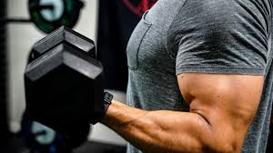
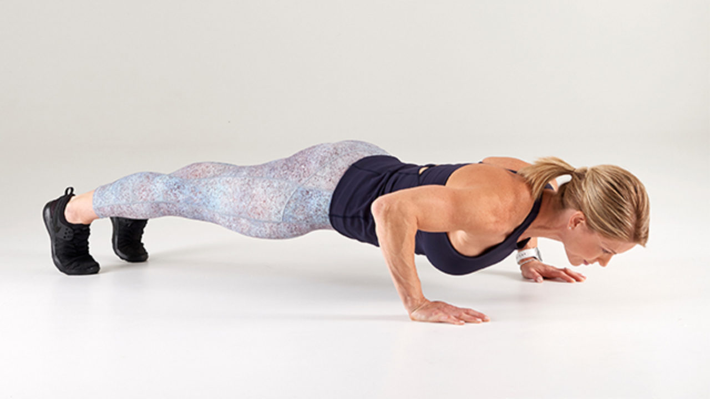

Arms
Bicep Curls
The exercise that has stood the test of time. A workout so classic your grandpa probably used to do these in his prime, and for good reason. It's one of the best ways to build arm muscle.
Push-Ups
The military standard of strength. Not only does this build arm muscle, but back and shoulder strength, too.